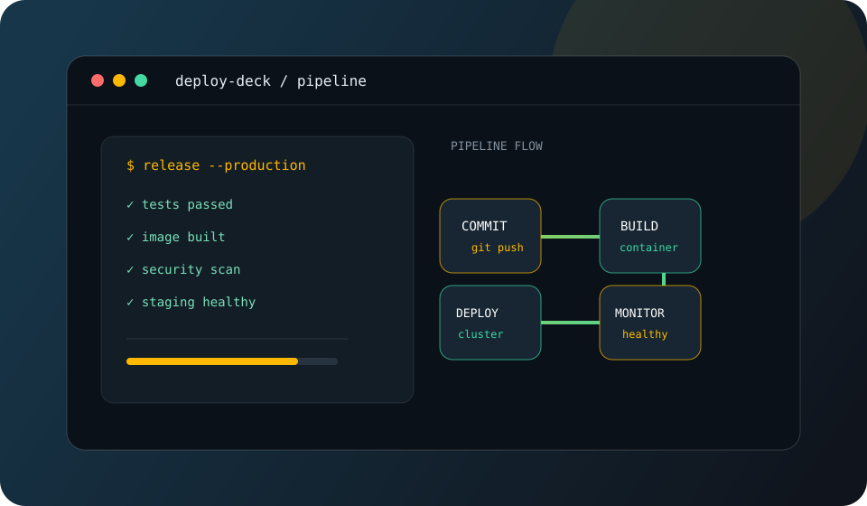

View conceptOpen to opportunities
Hello, I'm 4iger3
DevOps &
Backend Engineer.
I build and maintain dependable systems with Python, Linux, automation, and backend engineering.
BUILD. AUTOMATE. IMPROVE.
SCROLL TO EXPLORE
Systems mindset
⌘ Code / Infrastructure
Short CV
Reliable systems.
Reliable systems.
Practical code.
A concise overview of my focus and technical toolkit. Select a tab to explore.
Open to junior and growing opportunities
Get in touch
Practice concepts
Selected projects.
Fictional portfolio concepts created to show the kind of systems and tools I want to build.
Concept projects — fictional examples, not shipped products.
Contact
Let's build
Let's build
something reliable.
Interested in backend, Linux, or DevOps opportunities? I'd be glad to connect.
Email me